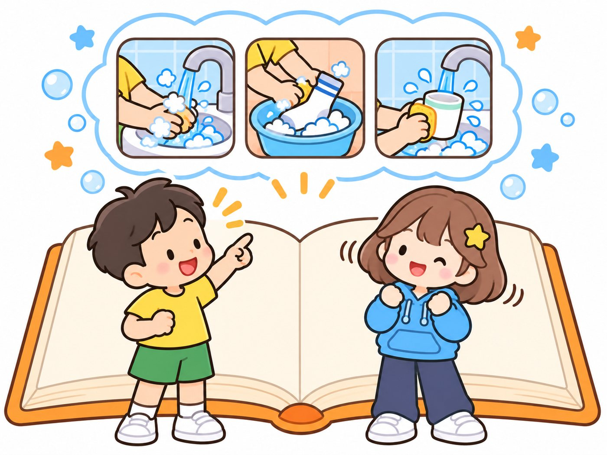
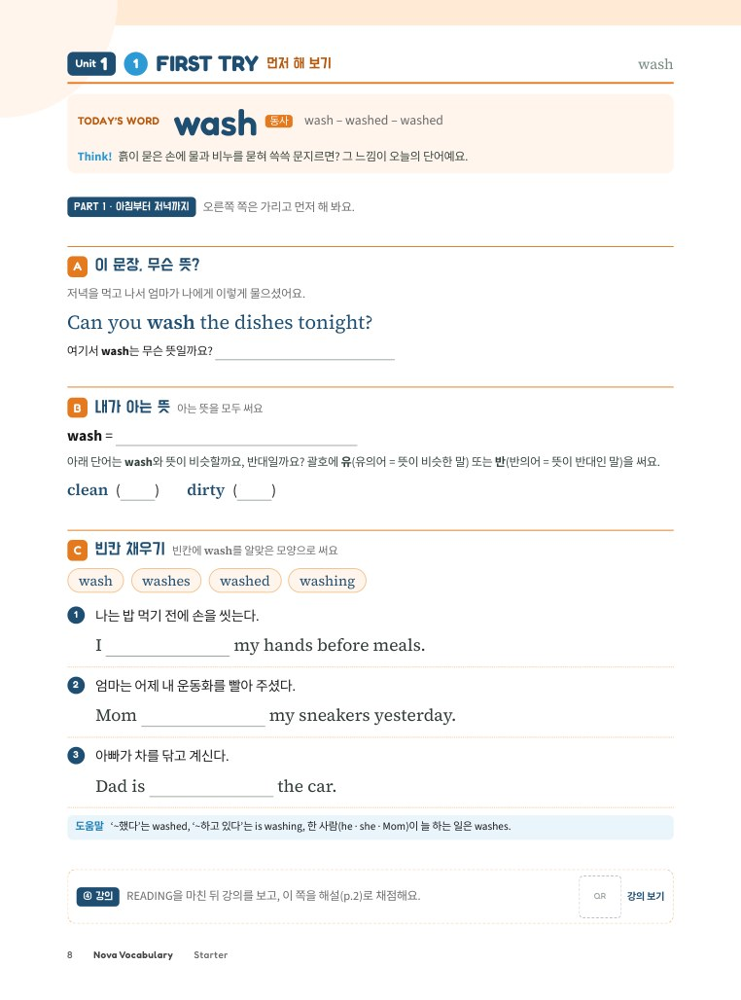
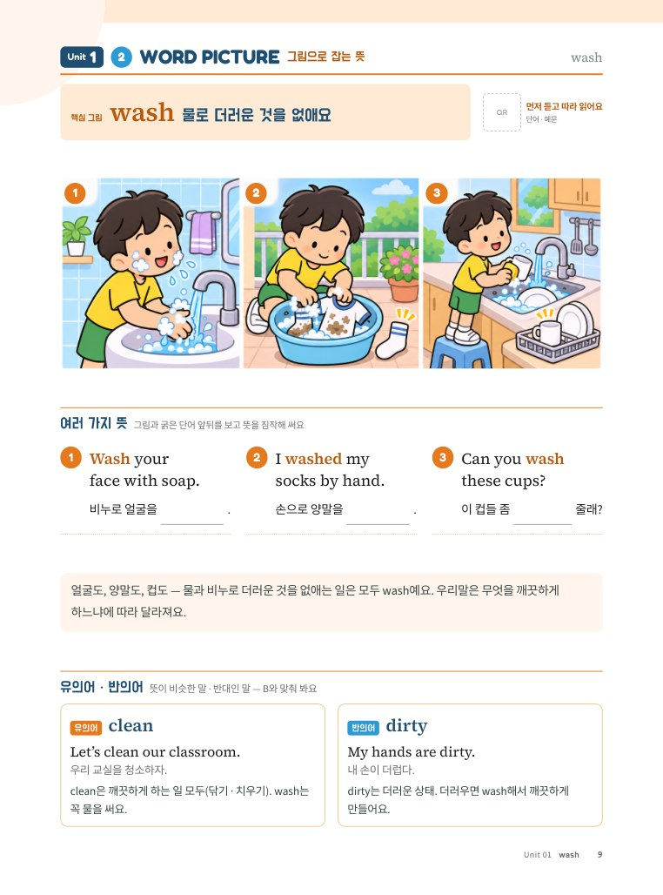
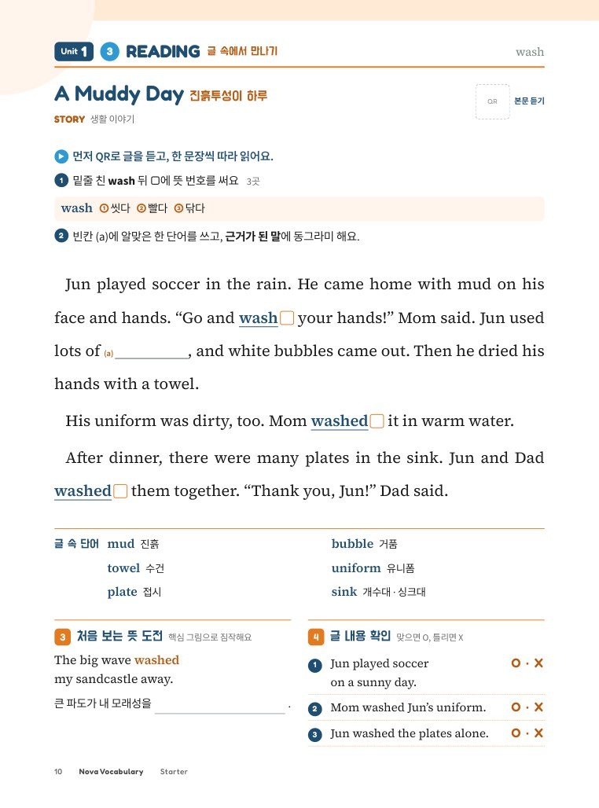
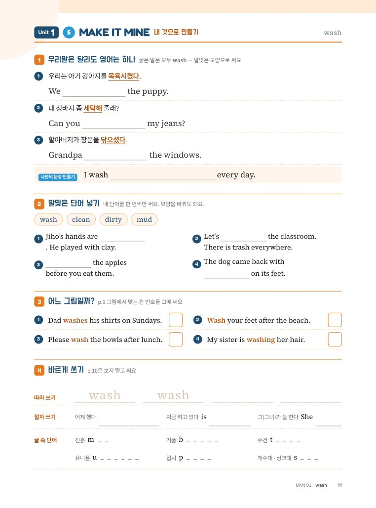
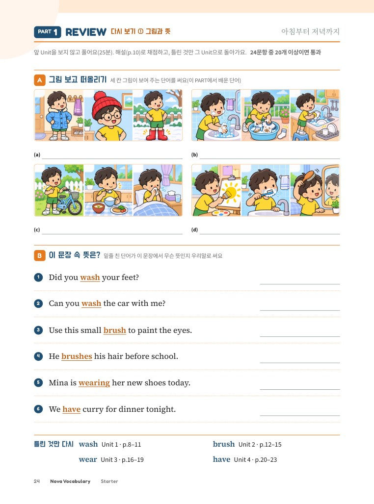
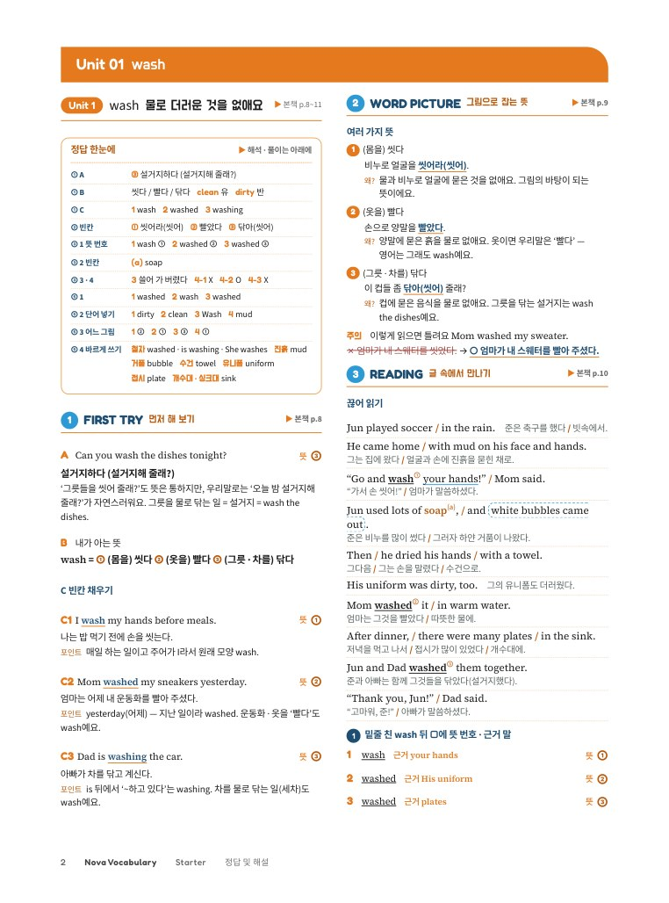
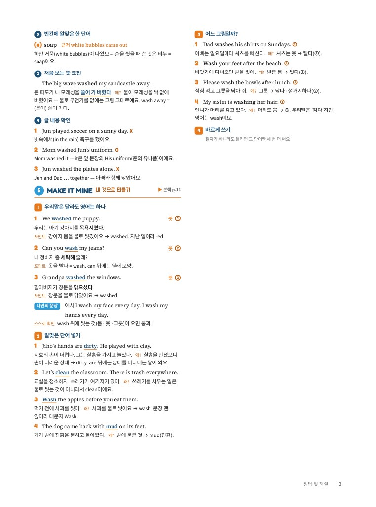

초등 영어 어휘 · 처음 만나는 여러 가지 뜻
Nova Vocabulary
Starter
쉬운 단어 하나, 세 칸 그림으로 여러 뜻을

NOVA ENGLISH 지음
차례
ContentsUnit 하나 = 단어 하나. 단어 옆 한 줄은 그 단어의 핵심 그림이에요. 찾는 단어가 있으면 여기서 쪽을 보고 펼쳐요.
1PART 1 아침부터 저녁까지8
Unit 01wash물로 더러운 것을 없애요8
Unit 02brush촘촘한 털로 쓱쓱 문질러요12
Unit 03wear몸에 걸치고 있어요16
Unit 04have나에게 있어요20
REVIEWPART 1 다시 보기24
2PART 2 몸을 움직여요26
Unit 05fly공중을 휙 가르며 움직여요26
Unit 06blow훅 바람을 내보내요30
Unit 07shake빠르게 이리저리 왔다 갔다 해요34
Unit 08cut날카로운 날로 둘로 나눠요38
REVIEWPART 2 다시 보기42
3PART 3 주고받아요44
Unit 09give내 것이 다른 사람에게 건너가요44
Unit 10show눈앞에 꺼내 보이게 해요48
Unit 11try처음인 것을 한번 해 봐요52
Unit 12help다른 사람에게 힘을 보태요56
REVIEWPART 3 다시 보기60
4PART 4 맛과 느낌62
Unit 13hot열이 화끈 느껴져요62
Unit 14cold온기가 없어 오싹해요66
Unit 15cool뜨겁지 않아 딱 좋아요70
Unit 16sweet입도 마음도 사르르 녹아요74
REVIEWPART 4 다시 보기78
5PART 5 크기와 자리80
Unit 17little크지 않아요, 많지 않아요80
Unit 18short처음부터 끝까지가 길지 않아요84
Unit 19full더 들어갈 자리가 없어요88
Unit 20top맨 위에 있어요92
REVIEWPART 5 다시 보기96
6PART 6 같은 모양, 다른 뜻98
Unit 21fan바람을 보내는 물건, 그리고 좋아하는 사람98
Unit 22glass투명한 재료, 그리고 그걸로 만든 물건102
Unit 23star반짝반짝 빛나는 것106
Unit 24can모양이 같은 두 낱말110
REVIEWPART 6 다시 보기114
차례1
구성과 특징
How to Use This Book한 Unit은 단어 하나를 네 쪽에 걸쳐 공부해요. 먼저 해 보고 → 듣고 그림으로 뜻을 잡고 → 글 속에서 만나고 → 강의를 본 뒤 내 것으로 만드는 같은 흐름이 책 끝까지 이어져요. 다음 권 Junior도 같은 흐름이에요.
본책 Unit — 네 쪽




2
PART REVIEW · 정답 및 해설



여섯 PART, 기본 단어 24개
PART 1아침부터 저녁까지→PART 2몸을 움직여요→PART 3주고받아요→PART 4맛과 느낌→PART 5크기와 자리→PART 6같은 모양, 다른 뜻
이 책의 약속
쓰기는 한 걸음씩PART 1–2는 빈칸에 알맞은 모양 쓰기, PART 3–4는 낱말 카드를 늘어놓아 문장 만들기, PART 5–6은 힌트 낱말로 문장 쓰기. 책을 마치면 Junior의 영어 문장 쓰기로 이어져요.
외우지 말고 그림으로뜻을 하나씩 외우지 않아요. 세 칸 그림에서 같은 아이가 같은 단어로 다른 일을 하는 것을 보면, 우리말은 달라도 영어는 하나라는 게 보여요.
구성과 특징3
공부법
Unit 하나(네 쪽)를 하루나 이틀에 공부하면 알맞아요. 순서대로 하고 통과 기준을 넘으면 다음 Unit으로 가요.
Unit 하나 공부 순서
- FIRST TRY — 오른쪽 쪽은 가리고 먼저 해 봐요. 모르면 짐작해서 — 틀려도 괜찮아요!
- WORD PICTURE — 먼저 QR로 단어와 예문을 듣고 따라 읽어요. 세 칸 그림을 보고 여러 가지 뜻의 빈칸을 채워요.
- READING — QR로 글을 듣고 한 문장씩 따라 읽어요. 밑줄마다 뜻 번호를 쓰고, 빈칸에 단어를 쓰고 근거가 된 말에 동그라미.
- 강의 보기 · 채점 — QR로 강의를 보며 그림과 뜻을 다시 정리하고, 앞의 세 쪽을 해설로 채점해요. FIRST TRY에서 틀린 것은 ‘다시 쓰기’에 다시 써요.
- MAKE IT MINE — 네 가지 문제를 풀고 채점해요. 바르게 쓰기는 앞쪽을 보지 않고 써요. 틀린 문항은 ‘왜?’를 꼭 읽어요.
통과 기준정답률 80%
통과 다음 Unit으로 가요. PART가 끝나면 REVIEW!
다시 ① 틀린 문항을 해설 보기 전에 한 번 더 → ② WORD PICTURE의 핵심 그림을 다시 보기 → ③ 해설의 ‘왜?’ 읽기
다시 ① 틀린 문항을 해설 보기 전에 한 번 더 → ② WORD PICTURE의 핵심 그림을 다시 보기 → ③ 해설의 ‘왜?’ 읽기
PART REVIEW
네 Unit을 마치면 REVIEW 두 쪽을 풀어요. 틀린 것만 그 Unit 쪽으로 돌아가 핵심 그림과 여러 가지 뜻을 다시 봐요.
이 책의 표시
① ② ③뜻 번호 — WORD PICTURE ‘여러 가지 뜻’의 번호. READING 밑줄과 문제에서 이 번호를 써요.유 · 반유의어(뜻이 비슷한 말) · 반의어(뜻이 반대인 말). ☞ p.6(a)READING 문맥 빈칸 — 앞뒤 말을 단서로 알맞은 단어를 써요.★낱말 카드 · 힌트에서 오늘의 단어가 들어갈 자리(PART 3–6).p.9 wash어느 그림일까?의 지난 단어 문장 — 그 쪽 그림에서 번호를 골라요.다른 정답해설에서 함께 맞는 답. 뜻이 같고 문장이 바르면 정답이에요.
4
진도표
My Plan한 칸을 마칠 때마다 □에 ✓. REVIEW는 맞힌 개수를 적어요(20개 이상 통과).
| FIRST TRY | WORD PICTURE | READING | 강의 | MAKE IT MINE | 마친 날 | |
|---|---|---|---|---|---|---|
| Unit 01wash | □ | □ | □ | □ | □ | / |
| Unit 02brush | □ | □ | □ | □ | □ | / |
| Unit 03wear | □ | □ | □ | □ | □ | / |
| Unit 04have | □ | □ | □ | □ | □ | / |
| REVIEW 1 | 맞힌 개수 ____ / 24 | / | ||||
| Unit 05fly | □ | □ | □ | □ | □ | / |
| Unit 06blow | □ | □ | □ | □ | □ | / |
| Unit 07shake | □ | □ | □ | □ | □ | / |
| Unit 08cut | □ | □ | □ | □ | □ | / |
| REVIEW 2 | 맞힌 개수 ____ / 24 | / | ||||
| Unit 09give | □ | □ | □ | □ | □ | / |
| Unit 10show | □ | □ | □ | □ | □ | / |
| Unit 11try | □ | □ | □ | □ | □ | / |
| Unit 12help | □ | □ | □ | □ | □ | / |
| REVIEW 3 | 맞힌 개수 ____ / 24 | / | ||||
| Unit 13hot | □ | □ | □ | □ | □ | / |
| Unit 14cold | □ | □ | □ | □ | □ | / |
| Unit 15cool | □ | □ | □ | □ | □ | / |
| Unit 16sweet | □ | □ | □ | □ | □ | / |
| REVIEW 4 | 맞힌 개수 ____ / 24 | / | ||||
| Unit 17little | □ | □ | □ | □ | □ | / |
| Unit 18short | □ | □ | □ | □ | □ | / |
| Unit 19full | □ | □ | □ | □ | □ | / |
| Unit 20top | □ | □ | □ | □ | □ | / |
| REVIEW 5 | 맞힌 개수 ____ / 24 | / | ||||
| Unit 21fan | □ | □ | □ | □ | □ | / |
| Unit 22glass | □ | □ | □ | □ | □ | / |
| Unit 23star | □ | □ | □ | □ | □ | / |
| Unit 24can | □ | □ | □ | □ | □ | / |
| REVIEW 6 | 맞힌 개수 ____ / 24 | / | ||||
진도표5
이 책에 나오는 말
Words about Words문제와 해설에 자주 나오는 말이에요. 모르는 말이 나오면 이 두 쪽으로 돌아와요.
품사 — 단어가 하는 일
| 이름 | 하는 일 | 예 |
|---|---|---|
| 명사 | 사람 · 물건 · 때 · 생각의 이름 | a brush 붓 · a fan 선풍기 · a star 별 |
| 동사 | 움직임이나 하는 일 | wash 씻다 · brush 닦다 · fly 날다 |
| 형용사 | 모양 · 상태 · 느낌을 꾸며 줘요 | a hot day 더운 · sweet candy 달콤한 |
같은 단어도 품사가 바뀌면 뜻이 달라져요. brush는 명사면 ‘붓 · 솔’, 동사면 ‘닦다 · 빗다’예요.
동사의 모양
| 이름 | 예 | 언제 써요? |
|---|---|---|
| 기본 모양 | wash · brush · fly | 사전에 나오는 모양 |
| -s 모양 | washes · brushes · flies | 그 · 그녀 · 그것이 늘 할 때 |
| 지난 모양 | washed · brushed · flew | 이미 한 일(~했다). 모양이 바뀌는 단어도 있어요 |
| -ing 모양 | washing · brushing · flying | is와 함께 ‘~하고 있다’ |
Unit마다 오늘의 단어 옆에 모양이 바뀌는 꼴을 적어 두었어요. 예: fly – flew – flown
쉬운 단어가 더 어려워요!wash · have · hot처럼 쉬워 보이는 단어일수록 뜻이 많아요. ‘씻다’ 하나만 외우면 wash the dishes를 ‘접시를 씻다’로만 읽게 돼요. 그림을 떠올리면 ‘물로 더러운 것을 없애기 → 설거지하다’가 보여요.
6
단어 공부에 쓰는 말
| 이름 | 뜻 | 예 |
|---|---|---|
| 여러 가지 뜻 | 단어 하나가 가진 여러 뜻. 이 책에서는 ① ② ③ 번호를 붙여요. | wash ① (몸을) 씻다 ② (옷을) 빨다 ③ (그릇을) 닦다 |
| 핵심 그림 | 여러 가지 뜻이 모두 뻗어 나오는 하나의 그림. 처음 보는 뜻도 이 그림으로 짐작해요. | wash = 물로 더러운 것을 없애요 |
| 유의어 | 뜻이 비슷한 말. 비슷해도 쓰임이 조금씩 달라요. | wash ≈ clean (깨끗하게 하다) |
| 반의어 | 뜻이 반대인 말. | hot ↔ cold · full ↔ empty |
| 문맥 | 단어 앞뒤의 말과 글의 흐름. 같은 단어라도 문맥에 따라 뜻이 달라져요. | hot soup → 뜨거운 · hot sauce → 매운 |
| 짝 말 | 단어가 다른 말과 붙어 새 뜻을 만들어요. | give up 포기하다 · try on 입어 보다 |
단어 하나, 이렇게 넓혀요
1핵심 그림wash = 물로 더러운 것을 없애요
→2여러 가지 뜻씻다 · 빨다 · 닦다
→3글 속 뜻 고르기앞뒤 말을 단서로 뜻 번호
→4내 문장으로빈칸 → 카드 → 힌트로 쓰기
이 책에 나오는 말7